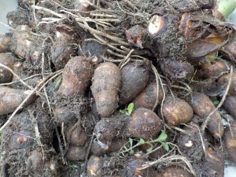
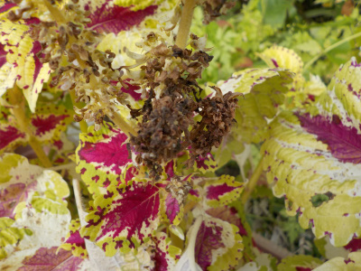
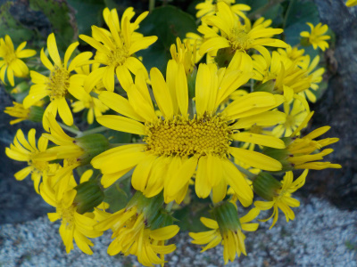
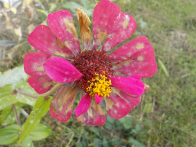
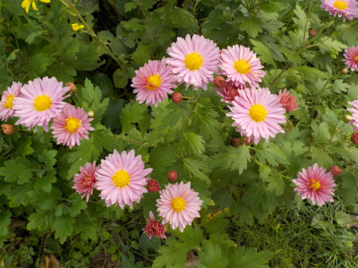

里芋を掘りました。
2020/11/29

いろいろ料理方法があるとは思いますが、ほぼ味噌汁に使っています。
味噌汁が一番簡単に食べれる気がする。
2020/11/29

いろいろ料理方法があるとは思いますが、ほぼ味噌汁に使っています。
味噌汁が一番簡単に食べれる気がする。
2020/11/15

花の後が茶色くなっていますが、触った感じ手ごたえがないです。
今まで種を採取したことがないので種子がどんなものか分かりませんが、なんか種がなさそうです。
案外種があるかもしれないので、茶色っぽい部分は採っておいて春にタネマキします。
2020/11/15

一番上の目立つ場所の花が、変な恰好でした。
隅っこだとありそうですが、天辺で奇形って．．．。
ちょっと嫌ですね。
2020/11/01

花が枯れていきます。秋ですね。

菊が咲きだしました。秋ですね。
過去の日記
畑仕事じゃないよ。